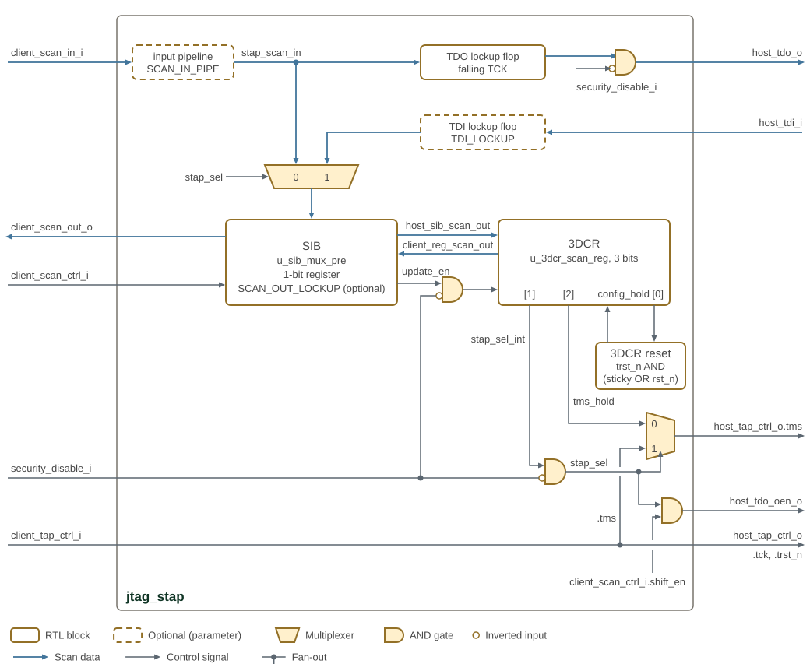

JTAG STAP
The Secondary TAP (STAP) enables hierarchical interconnection of TAP controllers across multiple chiplets as specified in IEEE 1838-2019 (3DIC). Each STAP interface extends the SiP’s primary JTAG access across internal or external chiplets.
1. Overview
The DTP supports these STAP types:
-
I/O STAP — extends JTAG to the next chiplet in the SiP.
-
SMC Debug STAP — provides access to the SMC CPU core debugger TAP.
-
SEP Debug STAP — provides access to the SEP CPU core debugger TAP.
-
Additional STAPs — optional connections to additional on- or off-chip TAPs.
-
Extended STAP Scan Interface — a port for adding STAPs external to the DTP.
Each STAP has an active-high disable input. When it is asserted, STAP selection, host TDO, and 3DCR updates are blocked.
2. Configuration Parameters
Three timing parameters are available to optimise the STAP for different physical topologies, particularly die-boundary crossings.
The parameters of jtag_stap are listed in jtag_stap.
3. Architecture
IEEE 1838-2019 enables hierarchical interconnection of TAP controllers across multiple chiplets. Each STAP interface provides an extension of a SiP’s primary JTAG interface across internal chiplets. When enabled, a STAP interface is part of the JTAG scan chain, otherwise the STAP interface is bypassed. In addition, STAPs can also support connection of other TAP interfaces included on the same chiplet as the PTAP.
3.1. Module Hierarchy
The STAP implementation consists of three main components integrated within a single module (Table 1).
| Module | Purpose | Conditional |
|---|---|---|
|
Segment Insertion Bit multiplexer for TAP control signal routing |
Always |
|
3-bit 3DCR control register (config_hold, stap_sel, tms_hold) |
Always |
Lockup latches |
TDO lockup (always), TDI lockup (optional), scan output lockup (optional) |
Per parameter |
3.2. STAP Module
Each STAP has a 3-bit 3DCR TDR that defines the control interface for the STAP. Note that the STAP 3DCRs take a distributed segment approach to improve timing, as opposed to the single monolithic PTAP 3DCR approach detailed in the IEEE 1838 standard. This 3DCR is connected inline within each STAP’s scan chain. A SIB is inserted at the end of the 3DCR to exclude it from the scan chain when not needed. The one-bit SIB is always in the scan chain, so a STAP adds one bit to the chain while its SIB is closed and four bits while it is open. While the STAP is selected, the downstream TAP’s scan path is also in the chain, between the STAP’s scan input and the SIB.
When not selected, the STAP interface TMS signal is tied to the constant value specified by the TMS-Hold bit of the 3DCR, otherwise it follows the PTAP TMS signal.
Figure 1 shows the scan path, the host TDO path and the
gating logic of one STAP. Blue lines carry scan data and grey lines carry control. A
small circle marks an inverted gate input, and a name at the tail of a short arrow
(stap_sel, security_disable_i and client_scan_ctrl_i.shift_en) is the same
signal drawn elsewhere in the figure. stap_scan_in feeds both the scan-in mux and
the TDO lockup flop, whose output leaves on host_tdo_o toward the secondary TAP.
While stap_sel is set, the scan-in mux passes the secondary TAP’s return on
host_tdi_i, which splices that TAP into the chain; otherwise it passes
stap_scan_in. The SIB inserts the 3DCR into the client scan path or bypasses it,
and its one-bit register drives client_scan_out_o. The dashed input stages are
optional: SCAN_IN_PIPE on client_scan_in_i defaults to disabled for all DTP
instances, and TDI_LOCKUP on host_tdi_i defaults to disabled but is enabled for
the I/O STAP (gen_stap_io) to provide timing margin for the die boundary crossing.

security_disable_i gates three signals through AND gates with an inverted input:
stap_sel, from the 3DCR stap_sel_int bit; the 3DCR update enable, from the SIB’s
update_en; and host_tdo_o. Because the TMS mux and the TDO output enable take
the gated stap_sel, a disabled STAP also parks the host TMS at tms_hold and holds
host_tdo_oen_o low. host_tap_ctrl_o carries TCK and TRST from
client_tap_ctrl_i unchanged; only its TMS passes through the mux. Where the TCK
and TRST line crosses the shift-enable input, the gap in the shift-enable line marks
that the two do not connect. The SIB itself is
not gated. The 3DCR reset combines the client TRST, config_hold_sticky and the scan
reset as Table 2 describes.
3.3. 3DCR Register
The 3-bit 3DCR control register is implemented using prim_jtag_scan_reg with a
loopback configuration. The register outputs feed back to the data inputs,
allowing the register to retain its configuration across scan operations while
still being scannable for updates.
Table 2 defines the three control bits retained in the STAP scan register.
| Bit | Field | Reset | Description |
|---|---|---|---|
2 |
TMS-Hold |
0 |
Defines the parked TMS value when the STAP is disabled. When |
1 |
Select (stap_sel) |
0 |
Enables the STAP scan interface. When |
0 |
Config-Hold |
0 |
Preserves the 3DCR configuration across Test-Logic-Reset. The active-low register reset is |
3.4. STAP Types
Table 3 lists the STAPs allocated for the DTP JTAG interface. The STAPs are serially chained TDI → TDO according to their order in this table from top to bottom. In addition to the STAPs integrated into the DTP, the STAP scan chain is ported out of the DTP so that the chiplet integrator may add additional STAPs closer to their point of use.
| Purpose | Description |
|---|---|
STAP to Next Chiplet |
This STAP forwards JTAG to the next chiplet in the SiP. |
SMC Core Debug |
Provides access to the internal SMC CPU core debugger TAP. |
SEP Core Debug |
Provides access to the internal SEP CPU core debugger TAP. |
[N-1:0] Additional STAPs |
Provides access to additional STAPs for on or off-chip TAP connectivity. |
Extended STAP Scan Interface |
Provides the ability to add STAPs external to the DTP closer to their point of use. |
3.5. Debug Disable
The security_disable_i input is active-high (1 = STAP disabled). When it is
asserted, three aspects of STAP operation are blocked (Table 4).
| Signal | Behavior when asserted |
|---|---|
|
Forced to 0 regardless of the 3DCR Select bit, so scan data is not routed through the downstream TAP. The 3DCR captures this forced value, so a scan through the 3DCR reads Select as 0. |
|
Forced to 0, so the downstream TAP cannot leak data on the host TDO even if it is accessed. |
|
Forced to 0, so the 3DCR cannot be updated while the STAP is disabled. The stored Select bit keeps its value: when |
STAP selection, host TDO, and 3DCR updates are all blocked combinationally at the module output, so there is no timing-dependent bypass of the disable.
3.6. Lockup Latches
The STAP implements three types of lockup latches to manage timing across die boundaries and long scan chains. These latches are clocked on the falling edge of TCK to capture data during the second half of the clock cycle, providing setup time margin for the next rising edge.
3.6.1. TDO Lockup Latch
The TDO lockup latch is always present and cannot be disabled. On every falling
edge of TCK it captures the client scan data entering the STAP and drives it on
host_tdo_o to the downstream TAP’s TDI. The downstream TAP samples TDI on the
rising edge of TCK, so the latch gives that path half a TCK period of setup
margin.
3.6.2. TDI Lockup Latch
The TDI lockup latch is optional and controlled by the TDI_LOCKUP parameter
(default = 0). When enabled, this latch captures the host TDI input on the
falling edge of TCK before routing it to the client TDI output. This adds one
additional cycle of latency but provides timing margin for die boundary
crossings where signal delays may be significant. In the DTP integration, TDI
lockup is enabled only for the I/O STAP that crosses between chiplets.
3.6.3. Scan Output Lockup Latch
The scan output lockup latch is optional and controlled by the SCAN_OUT_LOCKUP
parameter (default = 0). This latch is implemented within the
prim_jtag_sib_mux_pre module and retimes the client scan output on the falling
edge of TCK. Enable it where the client scan output feeds a rising-edge stage
clocked by a later TCK branch. Leave it disabled where the output reaches a
falling-edge stage, such as the PTAP TDO retimer: two falling-edge stages in
series add one TCK of scan latency. The DTP integration leaves it disabled on
every STAP.
4. Interface
4.1. Signal Interface
Packed control and bus types remain bundles at the jtag_stap boundary; their
members are not separate scalar ports.
The parameters and ports of jtag_stap are listed in jtag_stap.
4.2. Timing Requirements
The STAP interface timing follows IEEE 1838-2019:
-
TDI is sampled on the rising edge of TCK
-
TDO is driven on the falling edge of TCK
-
TMS is sampled on the rising edge of TCK
-
The TDO lockup latch captures the client scan data on every falling edge of TCK
4.3. Dependencies
The STAP depends on the following components:
-
hw/common/ocah_prim- Primitive cells (clock gating, synchronizers)